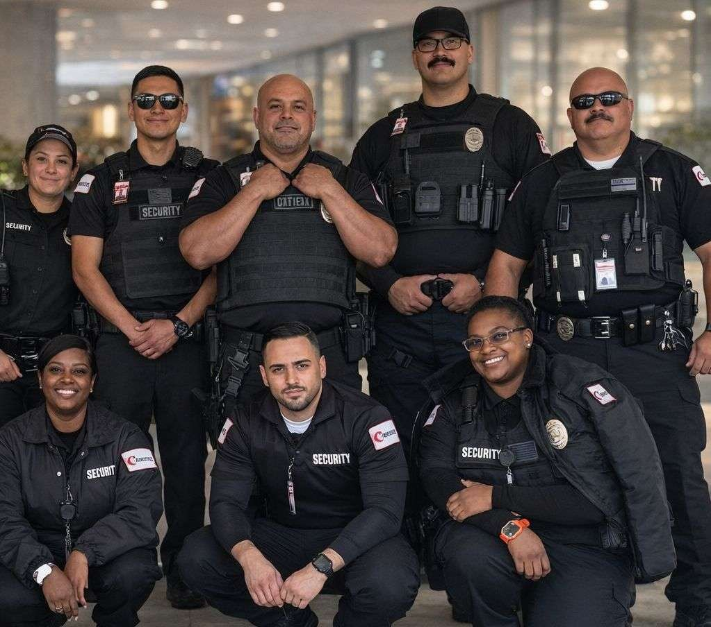

About Citiguard
Citiguard is a California security guard company and a licensed Private Patrol Operator (PPO #121572), headquartered at 5550 Topanga Canyon Blvd in Woodland Hills. Our Woodland Hills office is also the statewide dispatch center: guard assignments, patrol routes and fire watch coverage for Los Angeles County are coordinated there, with supervisors on call around the clock.
We provide security services to both residential and commercial properties, and we build custom security plans to fit each client's situation and location. No two properties have the same needs, so every assignment starts with listening: what you need to protect, when the risk is highest and what a good month looks like to you. You can learn more on the official Citiguard security guard company website.
Security Services
Citiguard offers a full range of guarding and patrol services. Most clients combine two or more, such as a daytime post with overnight patrols, or a construction gate officer with fire watch during hot work. Browse the complete list of Citiguard security services for details on each.
Armed and Unarmed Security Guards
Uniformed officers for lobbies, gates, docks and residential communities. Armed officers hold a current firearms permit and are assigned post by post where cash, high-value stock or past incidents raise the risk.
Marked Vehicle Patrols
Officers in clearly marked Citiguard vehicles visit at set times, randomized times or both, for lock-ups, perimeter checks and after-hours deterrence. Golf cart patrols are available for larger areas.
Fire Watch Services
Dedicated fire watch officers patrol impaired zones while a sprinkler or alarm system is down, or during hot work, logging every round for your fire authority.
Construction Site Security
Gate checks for workers and deliveries, perimeter rounds, equipment and material yard checks, and fire watch when the project needs it.
Special Event Security
Officers at entry points and in the crowd for concerts, festivals, private parties and corporate events, with a customer-service-first approach.
Executive Protection
Protection details and personal bodyguard services for executives and families, armed or unarmed, in plain clothes or suit and tie.
Parking Enforcement
Patrol or on-site officers enforce your parking rules with warnings, citations and access control, under your written policy.
Cargo and Escort Security
Armed or unarmed escorts for people under threat, and vehicle patrol escorts when valuable items are being transported.
Alarm Response
Where arranged in post orders, patrol officers respond to alarm activations, check the property and notify your contacts.
Industries We Protect
Citiguard officers work across property management, industrial and hospitality settings, including:
- Property management: apartments and HOAs, business parks, high-rises and lofts, campuses and government facilities.
- Industrial facilities: energy and utilities, logistics and transportation, manufacturing and storage facilities.
- Hospitality and healthcare: hotels, motels and resorts, hospitals and clinics.
- Construction and retail: active job sites, paused projects and shopping centers.
Our Officers and Training
Every Citiguard officer holds a California BSIS Guard Card. Before hire, candidates go through a background check, civil and criminal court history, drug testing (with random testing during employment), a motor vehicle report for patrol drivers, reference checks, previous employment verification and a workers' compensation report.
Training starts with an officer's first assignment and continues through their career, in the classroom and on site. Subjects include arrest procedures, basic law for security officers, report writing, observation skills, CPR, AED and first aid, emergency response, and verbal de-escalation. Ongoing advanced training takes place at Citiguard's training facility in the Antelope Valley. The majority of our officers hold Power to Arrest, Baton, Pepper Spray, Firearms and CPR/First Aid certifications.
Marked-vehicle patrol officers meet a higher bar: at least five years of security experience and prior law enforcement or a DOJ-recognized degree.

What Comes With Every Assignment
- Custom post orders written for every location, so each shift knows exactly what to check and who to call.
- Visible supervision: field supervisors with 15+ years of experience visit each post at least twice per eight-hour shift, on scheduled and random visits.
- CitiTrac reporting, free of charge: a handheld reporting system with time-stamped photos, checkpoint scans and tracking numbers for every reported issue.
- A consultant on call 24/7 for post-order changes, schedule changes and incidents. Our offices are staffed 24/7/365.
- A 30-day trial on new assignments, and no overtime charges except on major holidays.
- Licensed and insured: PPO #121572, with liability and workers' compensation coverage above the state-required minimums.
Where We Work
Citiguard's headquarters in Woodland Hills serves the San Fernando Valley and greater Los Angeles County, with a nearby West Hills office and branch offices in San Diego, Sacramento, Fresno, Riverside and Rancho Cucamonga.
Service areas include Los Angeles, Orange County, Riverside County, San Bernardino, San Diego, Ventura County, Santa Barbara, Fresno, Sacramento, the Bay Area (San Francisco, San Mateo, Alameda, San Jose, Santa Clara), Santa Cruz, Gilroy and Northridge. Visit the Woodland Hills headquarters page for directions and local details.
Frequently Asked Questions
Is Citiguard licensed and insured?
Yes. Citiguard is a licensed California Private Patrol Operator (PPO #121572) and carries liability and workers' compensation coverage. Every guard is BSIS-licensed.
Do you provide both armed and unarmed security guards?
Yes. Armed and unarmed on-site guards, marked vehicle patrols, fire watch, event security and executive protection are all dispatched from our Woodland Hills office.
How fast can coverage start?
A standard post typically starts 24 to 48 hours after the agreement is signed. A fire watch can typically start within 2 to 4 hours of the call, 24/7. For other urgent needs, an officer can often be on site the same day.
How is security priced?
Pricing depends on armed or unarmed status, the number of officers, the hours and length of service, and the property's location. Patrols are priced per visit. Contact us for a free consultation and a written quote.
Is the office open 24/7?
Yes. Citiguard offices are staffed 24/7/365, and dispatch answers (800) 613-5903 around the clock.